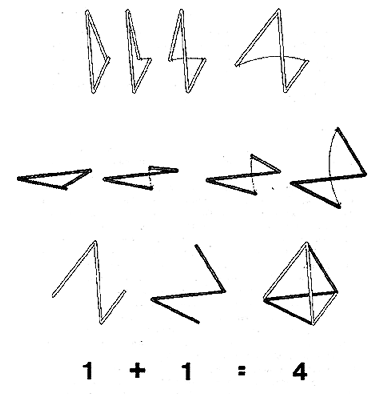
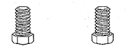

Fig. 108.01
Triangle and Tetrahedron: Synergy (1 + 1 = 4):
Two triangles may be combined in such a manner as to create the tetrahedron, a figure volumetrically embraced by four triangles. Therefore one plus one seemingly equals four.

Copyright © 1997 Estate of R. Buckminster Fuller